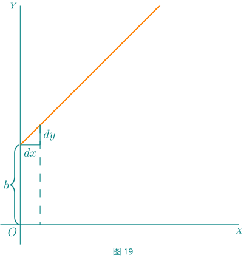
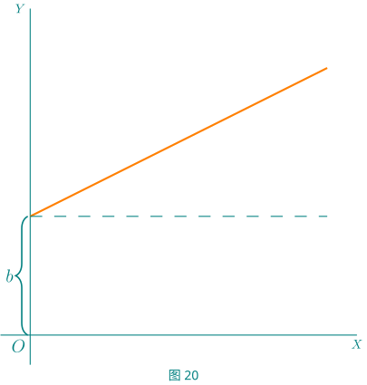
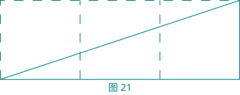
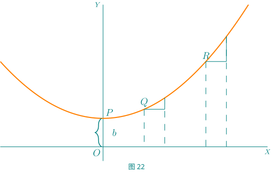
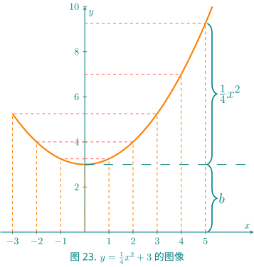
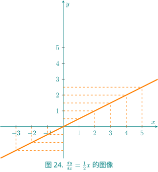
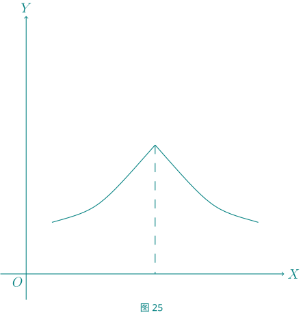
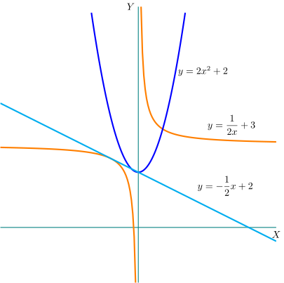
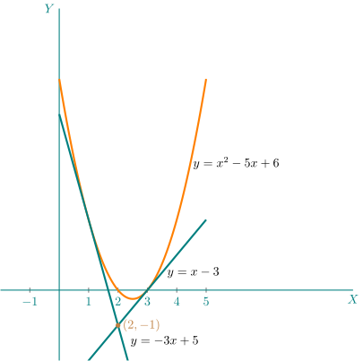

10.1. 导数的几何意义：示例
既然我们已经理解了 ( \dfrac{dy}{dx} ) 表示曲线在任意一点处的陡峭程度（即切线斜率），接下来回顾一些已经学过的、可以求导的函数表达式。
（1）先看最简单的情形：


在图19中，x 和 y 轴以相同的单位比例绘制了该函数的图像。 若令 ( x = 0 )，则对应的纵坐标为 ( y = b )；也就是说，这条“曲线”（实际上是一条直线）在 ( y )-轴上的截距为 ( b )。 从该点起，它以 (45^\circ) 角向上延伸；因为无论给 ( x ) 赋予怎样的正值，( y ) 都会相应地增加相同的量。 因此，这条直线的坡度（或称斜率）为 (1:1)。
现在，按照我们已学过的幂函数和常量求导法则，对 ( y = x + b ) 求导，得到：
这说明：对于向右的任意微小步长 ( dx )，曲线上升的步长 ( dy ) 与之相等。 而且这一斜率是恒定的——处处相同。
（2）再考虑另一种情形：
我们知道，这条直线同样会在 ( y )-轴上高度为 ( b ) 处开始。但在作图之前，先通过求导确定其斜率：
斜率恒定不变，其倾斜角的正切值即为 ( a )。 不妨给 ( a ) 赋一个具体数值，例如 ( \frac{1}{3} )。 那么这条直线应具有“每向右走 3 单位，向上走 1 单位”的坡度；换言之，( dx ) 是 ( dy ) 的 3 倍，如图21所示（放大图示）。 于是，我们便可在图20中按此斜率画出该直线。

（3）现在来看一个稍复杂些的例子：
这条曲线同样在 ( y )-轴上、距原点高度为 ( b ) 处起始。
对其求导：

这表明：曲线的陡峭程度不是恒定的，而是随 ( x ) 的增大而增大。 在起点 ( P )（即 ( x = 0 ) 处），曲线（见图22）没有倾斜——它是水平的。 而在原点左侧（即 ( x < 0 ) 的区域），( \dfrac{dy}{dx} ) 为负值，意味着曲线从左向右是下降的，如图所示。
我们通过一个具体例子来说明这一点。考虑方程：
对其求导得：
现在给 ( x ) 赋一系列连续的值（例如从 0 到 5），分别用第一个方程计算对应的 ( y ) 值，用第二个方程计算对应的 ( \dfrac{dy}{dx} ) 值。整理成下表：
| ( x ) | 0 | 1 | 2 | 3 | 4 | 5 |
|---|---|---|---|---|---|---|
| ( y ) | 3 | (3\frac{1}{4}) | 4 | (5\frac{1}{4}) | 7 | (9\frac{1}{4}) |
| ( \dfrac{dy}{dx} ) | 0 | ( \frac{1}{2} ) | 1 | (1\frac{1}{2}) | 2 | (2\frac{1}{2}) |
接着，我们在两个图中分别绘制这些数据：
- 图23：以 ( x ) 为横坐标，( y ) 为纵坐标，绘出原函数曲线；
- 图24：以 ( x ) 为横坐标，( \dfrac{dy}{dx} ) 为纵坐标，绘出导函数曲线。
对于任意给定的 ( x ) 值，第二条曲线（导函数）中对应点的纵坐标高度，正比于第一条曲线（原函数）在该点处的切线斜率。


如果曲线在某处出现尖角（cusp），如图25所示，则该点的斜率会突然从向上变为向下。 此时，( \dfrac{dy}{dx} ) 显然会经历一次从正值到负值的突变。

以下例题进一步展示上述原理的应用。
（4）求曲线
在 ( x = -1 ) 处的切线斜率，并求该切线与曲线 ( y = 2x^2 + 2 ) 的夹角。

切线的斜率即为曲线在切点处的斜率，也就是该点处函数的导数值 ( \dfrac{dy}{dx} )。
对 ( y = \dfrac{1}{2x} + 3 ) 求导，得
当 ( x = -1 ) 时，
这就是该点处切线（以及曲线本身）的斜率。
由于切线是一条直线，其方程可写为 ( y = ax + b )，而其斜率即为 ( a = \dfrac{dy}{dx} = -\dfrac{1}{2} )。
又当 ( x = -1 ) 时，原函数值为
因为切线经过点 ( (-1,, 2\frac{1}{2}) )，该点坐标必须满足切线方程：
代入得
因此，切线的方程为
接下来，考虑这条切线与另一条曲线 ( y = 2x^2 + 2 ) 的交点。
两曲线的交点是它们共有的点，其坐标必须同时满足两个方程，即求解以下联立方程组：
令两式右边相等：
整理得
解得
现在考察曲线 ( y = 2x^2 + 2 ) 在这两个交点处的斜率。
其导数为
当 ( x = 0 ) 时，( \dfrac{dy}{dx} = 0 )，即曲线在此处水平.
当 ( x = -\dfrac{1}{4} ) 时，
即曲线在此点向右下方倾斜，与水平方向夹角 ( \theta ) 满足 ( \tan\theta = 1 )，故 ( \theta = 45^\circ )。
而切线（直线）的斜率为 ( -\dfrac{1}{2} )，表示它也向右下方倾斜，与水平方向夹角 ( \phi ) 满足 ( \tan\phi = \dfrac{1}{2} )，即 ( \phi \approx 26^\circ 34' )。
因此，在第一个交点（( x = 0 )）处，曲线水平，切线与之成 ( 26^\circ 34' ) 的夹角；在第二个交点（( x = -\dfrac{1}{4} )）处，曲线斜率为 (-1)（即与水平成 (45^\circ) 向下），切线斜率为 (-\dfrac{1}{2})（即与水平成 (26^\circ 34') 向下），故二者之间的夹角为：
（5）过点 ( (2, -1) ) 作一条直线，使其与曲线
相切。求切点的坐标。

切线的斜率必须等于该曲线在切点处的导数值。对曲线求导得
因此切线斜率为 ( 2x - 5 )。
设所求切线的方程为 ( y = ax + b )。 由于该直线经过点 ( (2,, -1) )，代入得
又因该直线是曲线的切线，其斜率 ( a ) 必须等于曲线在切点处的导数，即
此外，切点 ( (x, y) ) 同时满足曲线方程和切线方程：
于是我们得到关于未知数 ( a, b, x, y ) 的四个方程。
由（i）和（ii）可得：
将（iii）中的 ( b = -1 - 2a ) 和（iv）中的 ( a = 2x - 5 ) 代入上式：
展开右边：
所以右边化简为
于是方程变为：
移项整理：
即
解得
代入曲线方程（i）求对应的 ( y ) 值：
- 当 ( x = 1 ) 时，( y = 1^2 - 5 \cdot 1 + 6 = 2 )；
- 当 ( x = 3 ) 时，( y = 3^2 - 5 \cdot 3 + 6 = 0 )。
因此，存在两个切点，分别为 \((1, 2)\) 和 \((3, 0)\)。
注：在所有涉及曲线的练习中，若能通过实际绘制曲线来验证所得到的结论，将会大有裨益，极具启发性。